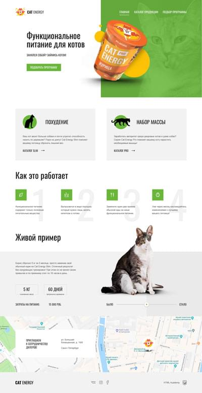

Занимаюсь созданием удобных, современных и красивых сайтов для пользователей. Применяю доступность, чтобы людям с ограниченными возможностями или здоровья было легко и комфортно пользоваться веб-ресурсами.
Использую семантику при разметке страниц для помощи экранным дикторам. Реализую возможность "передвижения" по сайту с помощью клавиатуры, для этого корректно задаю фокус на кнопки и ссылки. Слежу за оптимальной контрастностью фона и текста.
Мотивирует неугасающее желание личностного роста, жажда новых возможностей, стремление двигаться вперёд и впитывать прогрессивные идеи. Радует польза от проделаной работы.
Я с удовольствием присоединюсь к команде разработчиков, влюблённых в своё дело, готовых развиваться, улучшать свои проекты, и не чуждых эмпатии.
2010 год - закончила Российский Торгово-Экономический Университет (реорганизован и объединён с Российским Экономическим Университетом им. Г.В. Плеханова).
Мир стремительно меняется. Развиваясь, мы чуть ближе приближаемся к его темпу. Мне нравится «впитывать» новые знания и опыт, применять их на практике. Поэтому я никогда не отказываюсь от возможности посещать курсы или лекции и получать дополнительное образование.
Навыки
То, о чём могу говорить, что хорошо знаю. релевантный опыт. Рассказать о софтскиллах, добавить изюминку, выделить резюме из общей массы.
Портфолио
Device - интернет-магазин гаджетов
Наиболее сложный проект HTML Academy на профессиональном онлайн курсе HTML и CSS, уровень 1 (в 2019 году).
Это двустраничный макет с фиксированной шириной, обладающий непростой сеткой и неочевидным порядком компонентов в разметке.
Чему научилась:
создавать доступную и выразительную разметку с помощью HTML;
оформлять текствовое содержимое и декоративные элементы, используя CSS;
взаимодействовать с графическим макетом с помощью Zeplin;
работать с растровой и векторной графикой SVG в таких графических редакторах как Photoshop и Illustrator;
оптимизировать код и готовить проект к публикации.
Cat Energy - интернет-магазин профессионального питания для котов

Проект HTML Academy с информативным и неперегруженым интерфейсом.
Это трехстраничный макет, под мобильный, планшетный и десктопный вьюпорт, адаптивный и "резиновый".
Навигация в нём меняется на всех версиях, и в итоге скрывается в выпадающем меню.
Чему научилась:
создавать разметку по методологии BEM;
выстраивать адаптивные сетки с помощью Flexbox;
подготавливать и использовать адаптивную графику;
менять вес изображения при различной плотности пикселей (ретинизация);
освоила Gulp - инструмент автоматизации;
использовать препроцессор Less;
пользоваться Git для контроля проекта и взаимодействия с наставником.
Code and magick - забавная браузерная игра
Проект игры HTML Academy в которой можно управлять персонажем (двигаться влево, вправо и даже прыгать).
Это одностраничный макет с фиксированной шириной.
На сайте можно загрузить свою фотографию/аватарку, кастомизировать персонажа, увидеть результат с которым фаербол врезается в забор.
Чему научилась:
основам JavaScript;
оживлять статическую страницу и решать типовые задачи.
Kekstagram - сервис для обмена фотографиями
Проект сервиса для публикации фотографий HTML Academy.
Это одностраничный макет с фиксированной шириной, в котором можно как раскрывать и смотреть комментарии, к уже загруженным фотографиям, так и добавлять свои изображения.
Кроме того, их можно редактировать, применив фильтры.
Чему научилась:
основам алгоритмического мышления;
валидировать данные в формах и взаимодействовать с серверами;
выявлять ошибки и тестировать сайт, используя инструмент дебаггинга Chrome DevTools;